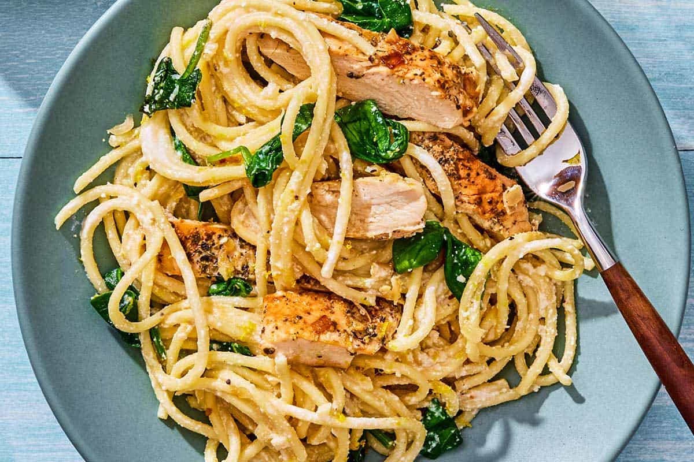

Pasta recipe

Description
Pasta is a type of food typically made from an unleavened dough of wheat flour mixed with water or eggs, and
formed into sheets or other shapes, then cooked by boiling or baking. Rice flour, or legumes such as beans or
lentils, are sometimes used in place of wheat flour to yield a different taste and texture, or as a gluten-free
alternative. Pasta is a staple food of Italian cuisine.
Ingredients
- 2 boneless, skinless chicken breasts (about 1.3 lb. total)
- 2 tsp Italian seasoning
- 1 Tbsp cooking oil
- 2 Tbsp butter
- 4 cloves garlic, minced
- 1 cup heavy cream
- 3/4 cup grated Parmesan
- 1/4 tsp salt
- 1/4 tsp pepper
- 1 Tbsp chopped parsley (optional garnish)
- 8 oz. fettuccine
Instructions
- Season both sides of the chicken breasts with the Italian seasoning and a pinch of salt and pepper.
- Add the cooking oil to a large skillet and heat over medium. Once hot, add the seasoned chicken and cook
until golden brown on each side and cooked through (about 5-7 minutes per side, depending on the size of the
chicken breasts). Remove the cooked chicken to a clean cutting board to rest.
- While the chicken is cooking, begin boiling a large pot of water for the fettuccine. Once boiling, add the
pasta and continue to boil until tender. Drain the pasta in a colander.
- While the pasta is cooking, prepare the garlic parmesan cream sauce. Add the butter and minced garlic to the
skillet used to cook the chicken. Sauté the garlic for about one minute, or just until it softens and
becomes
very fragrant.
- Add the heavy cream to the skillet with the garlic and butter. Allow the cream to come up to a simmer, then
let it continue to simmer until it reduces by about one third.
- Stir the Parmesan into the cream sauce until it is melted and smooth. Add the salt and pepper. Taste the
sauce and adjust the salt and pepper if needed.
- Slice the cooked chicken and then add it to the skillet with the cream sauce. Stir to combine and heat
through.
- Finally, add the cooked and drained fettuccine to the skillet and toss until it is coated in the garlic
parmesan cream sauce. Top with chopped parsley, if desired, and serve!